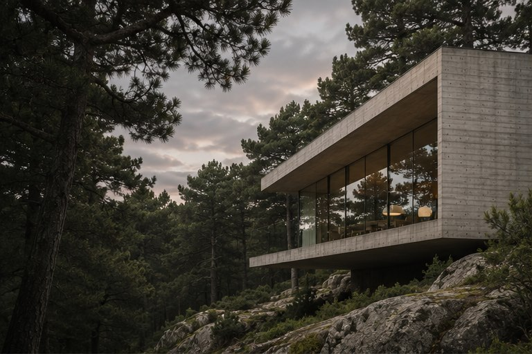
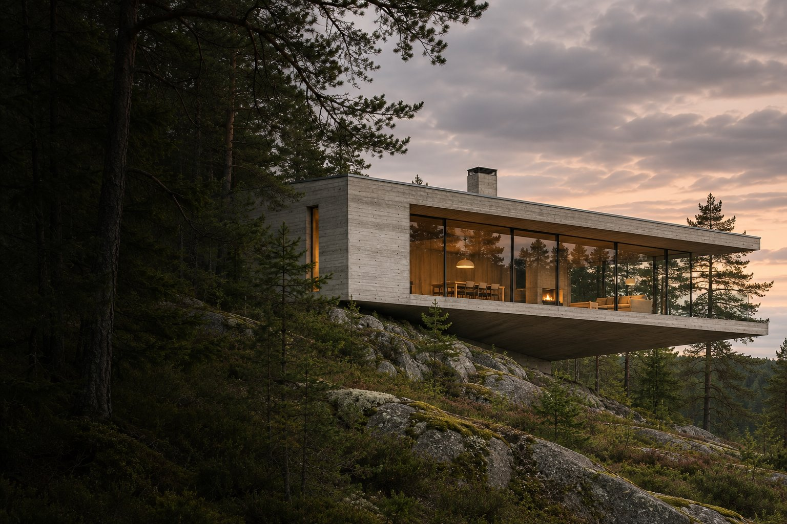
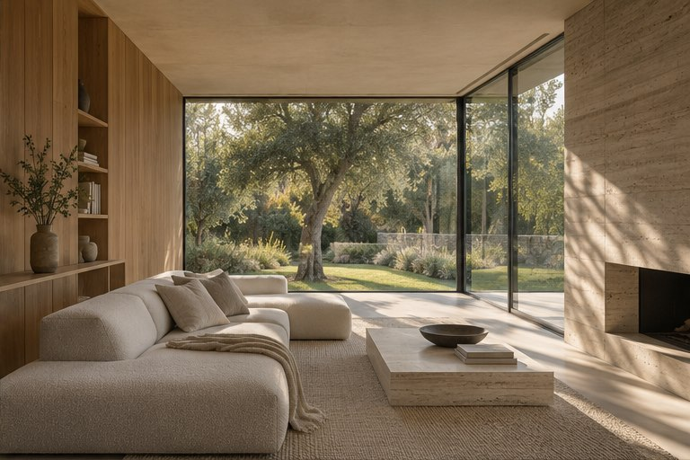
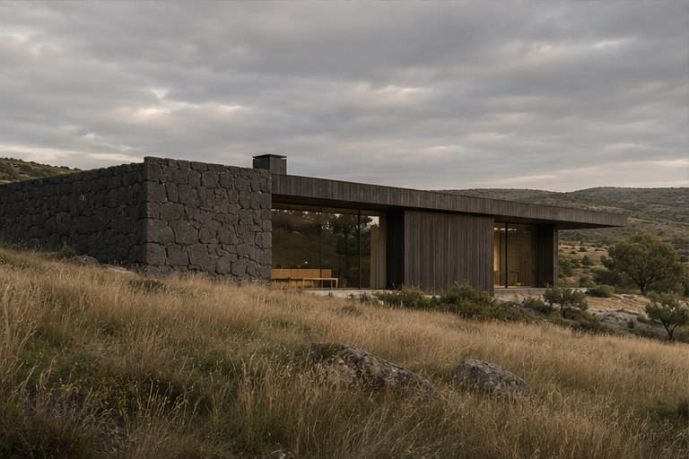
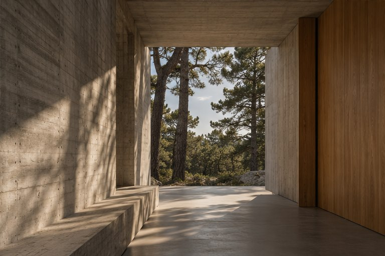

Линия сосен
Бетонная консоль над лесным склоном и гостиная вровень с кронами.

Архитектурное бюро
Проектируем дома и интерьеры, в которых важны свет, материал и характер места.
Линия сосен Концепт частного дома
Архитектурные концепции

Бетонная консоль над лесным склоном и гостиная вровень с кронами.

Дуб, травертин и мягкая геометрия в интерьере с видом на сад.

Низкий объём из базальта и дерева повторяет линию открытого холма.

Начинаем с рельефа, света и видов.
Продумываем стыки, фактуры и пропорции.
Выбираем то, что красиво стареет.
Планируем пространство вокруг ваших привычек.
Подход
Сначала разбираемся, как вы хотите жить. Затем переводим это в план, свет и материал.
Разбираем ваши привычки, бюджет и ограничения участка. Фиксируем приоритеты проекта.
Находим форму, планировку и палитру материалов. Проверяем, как замысел работает в пространстве.
Уточняем конструкции и узлы, готовим чертежи и согласуем решения со смежными специалистами.
Разбираем вопросы стройки и сверяем решения на объекте с проектом.
Можно обратиться за отдельным этапом или обсудить весь путь от эскиза до стройки.
Посадка на участок, объём, планировка и материал фасада.
ОбсудитьАрхитектурные чертежи и узлы для подготовки к строительству.
ОбсудитьПланировка, свет, отделка и встроенная мебель.
ОбсудитьНовые сценарии жизни для дома с собственной историей.
ОбсудитьВыезды на объект, разбор деталей и согласование изменений.
ОбсудитьСпецификации и материалы для разговора с подрядчиками.
ОбсудитьFAQ
С разговора о месте, ваших привычках и бюджете. Если участок уже есть, пригодятся его план и фотографии. Для интерьера подойдёт план помещения.
Да. Стоит заранее оценить рельеф, ориентацию по солнцу, подъезд и ограничения застройки. Это помогает понять, какой дом можно разместить на участке.
Из масштаба, сложности участка или здания и состава работ. После знакомства формируется предложение с перечнем этапов и их стоимостью.
Да. Концепция определяет планировку, форму и характер материалов. По ней можно обсудить бюджет и решить, какие чертежи понадобятся дальше.
Архитектор отвечает на вопросы подрядчика и проверяет, как проектные решения воплощаются на объекте. Состав сопровождения и график выездов обсуждаются заранее.
Где он будет, как вы хотите там жить и что уже придумали? Начните с того, что знаете сейчас.
Обсудить проект в Telegram